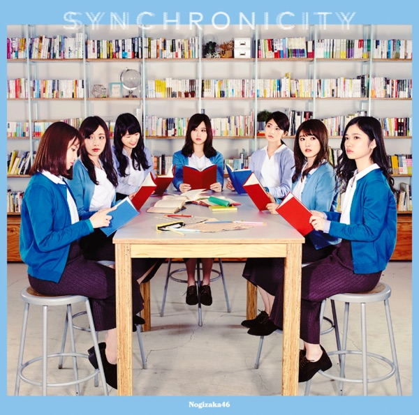

サカミチ
サカミチシンクロニシティしんくろにしてぃ

初収録リリース「シンクロニシティ」のジャケット
フォーメーション
上が後列、下が前列です。色付きがセンター。（公式発表に基づく）
 井上小百合
井上小百合 新内眞衣
新内眞衣 高山一実
高山一実 星野みなみ
星野みなみ 若月佑美
若月佑美 樋口日奈
樋口日奈 寺田蘭世
寺田蘭世 桜井玲香
桜井玲香 松村沙友理
松村沙友理 久保史緒里
久保史緒里 生駒里奈
生駒里奈 大園桃子
大園桃子 衛藤美彩
衛藤美彩 秋元真夏
秋元真夏 山下美月
山下美月 堀未央奈
堀未央奈 生田絵梨花
生田絵梨花 白石麻衣
白石麻衣 西野七瀬
西野七瀬 齋藤飛鳥
齋藤飛鳥 与田祐希
与田祐希参加メンバー（21名）
秋元真夏、生田絵梨花、生駒里奈、井上小百合、衛藤美彩、齋藤飛鳥、桜井玲香、白石麻衣、高山一実、西野七瀬、樋口日奈、星野みなみ、松村沙友理、若月佑美、新内眞衣、寺田蘭世、堀未央奈、大園桃子、久保史緒里、山下美月、与田祐希
この曲が披露されたライブ（137件）
新しい順に20件まで表示しています（全137件）。